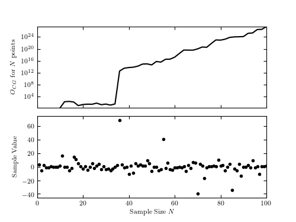

Odds Ratio for Cauchy vs Gaussian¶
Figure 5.19
The Cauchy vs. Gaussian model odds ratio for a data set drawn from a Cauchy distribution (mu = 0, gamma = 2) as a function of the number of points used to perform the calculation. Note the sharp increase in the odds ratio when points falling far from the mean are added.
{kind=link}
Results for first 10 points:
L(M = Cauchy) = 1.18e-12 +/- 1.92e-16
L(M = Gauss) = 8.09e-13 +/- 1.32e-16
O_{CG} = 1.45 +/- 0.000237
# Author: Jake VanderPlas
# License: BSD
# The figure produced by this code is published in the textbook
# "Statistics, Data Mining, and Machine Learning in Astronomy" (2013)
# For more information, see http://astroML.github.com
# To report a bug or issue, use the following forum:
# https://groups.google.com/forum/#!forum/astroml-general
import numpy as np
from matplotlib import pyplot as plt
from scipy.stats import cauchy, norm
from scipy import integrate
#----------------------------------------------------------------------
# This function adjusts matplotlib settings for a uniform feel in the textbook.
# Note that with usetex=True, fonts are rendered with LaTeX. This may
# result in an error if LaTeX is not installed on your system. In that case,
# you can set usetex to False.
from astroML.plotting import setup_text_plots
setup_text_plots(fontsize=8, usetex=True)
def logL_cauchy(xi, gamma, mu,
mu_min=-10, mu_max=10, sigma_min=0.01, sigma_max=100):
"""Equation 5.74: cauchy likelihood"""
xi = np.asarray(xi)
n = xi.size
shape = np.broadcast(gamma, mu).shape
xi = xi.reshape(xi.shape + tuple([1 for s in shape]))
prior_normalization = - (np.log(mu_max - mu_min)
+ np.log(np.log(sigma_max / sigma_min)))
return (prior_normalization
- n * np.log(np.pi)
+ (n - 1) * np.log(gamma)
- np.sum(np.log(gamma ** 2 + (xi - mu) ** 2), 0))
def logL_gaussian(xi, sigma, mu,
mu_min=-10, mu_max=10, sigma_min=0.01, sigma_max=100):
"""Equation 5.57: gaussian likelihood"""
xi = np.asarray(xi)
n = xi.size
shape = np.broadcast(sigma, mu).shape
xi = xi.reshape(xi.shape + tuple([1 for s in shape]))
prior_normalization = - (np.log(mu_max - mu_min)
+ np.log(np.log(sigma_max / sigma_min)))
return (prior_normalization
- 0.5 * n * np.log(2 * np.pi)
- (n + 1) * np.log(sigma)
- np.sum(0.5 * ((xi - mu) / sigma) ** 2, 0))
def calculate_odds_ratio(xi, epsrel=1E-8, epsabs=1E-15):
"""
Compute the odds ratio by perfoming a double integral
over the likelihood space.
"""
gauss_Ifunc = lambda mu, sigma: np.exp(logL_gaussian(xi, mu, sigma))
cauchy_Ifunc = lambda mu, gamma: np.exp(logL_cauchy(xi, mu, gamma))
I_gauss, err_gauss = integrate.dblquad(gauss_Ifunc, -np.inf, np.inf,
lambda x: 0, lambda x: np.inf,
epsabs=epsabs, epsrel=epsrel)
I_cauchy, err_cauchy = integrate.dblquad(cauchy_Ifunc, -np.inf, np.inf,
lambda x: 0, lambda x: np.inf,
epsabs=epsabs, epsrel=epsrel)
if I_gauss == 0:
O_CG = np.inf
err_O_CG = np.inf
else:
O_CG = I_cauchy / I_gauss
err_O_CG = O_CG * np.sqrt((err_gauss / I_gauss) ** 2)
return (I_gauss, err_gauss), (I_cauchy, err_cauchy), (O_CG, err_O_CG)
#------------------------------------------------------------
# Draw points from a Cauchy distribution
np.random.seed(44)
mu = 0
gamma = 2
xi = cauchy(mu, gamma).rvs(100)
#------------------------------------------------------------
# compute the odds ratio for the first 10 points
((I_gauss, err_gauss),
(I_cauchy, err_cauchy),
(O_CG, err_O_CG)) = calculate_odds_ratio(xi[:10])
print "Results for first 10 points:"
print " L(M = Cauchy) = %.2e +/- %.2e" % (I_cauchy, err_cauchy)
print " L(M = Gauss) = %.2e +/- %.2e" % (I_gauss, err_gauss)
print " O_{CG} = %.3g +/- %.3g" % (O_CG, err_O_CG)
#------------------------------------------------------------
# calculate the results as a function of number of points
Nrange = np.arange(10, 101, 2)
Odds = np.zeros(Nrange.shape)
for i, N in enumerate(Nrange):
res = calculate_odds_ratio(xi[:N])
Odds[i] = res[2][0]
#------------------------------------------------------------
# plot the results
fig = plt.figure(figsize=(5, 3.75))
fig.subplots_adjust(hspace=0.1)
ax1 = fig.add_subplot(211, yscale='log')
ax1.plot(Nrange, Odds, '-k')
ax1.set_ylabel(r'$O_{CG}$ for $N$ points')
ax1.set_xlim(0, 100)
ax1.xaxis.set_major_formatter(plt.NullFormatter())
ax1.yaxis.set_major_locator(plt.LogLocator(base=10000.0))
ax2 = fig.add_subplot(212)
ax2.scatter(np.arange(1, len(xi) + 1), xi, lw=0, s=16, c='k')
ax2.set_xlim(0, 100)
ax2.set_xlabel('Sample Size $N$')
ax2.set_ylabel('Sample Value')
plt.show()